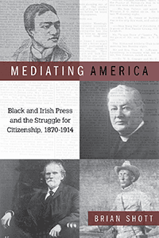

<HTML><head><script> (function(i,s,o,g,r,a,m){i['GoogleAnalyticsObject']=r;i[r]=i[r]||function(){  (i[r].q=i[r].q||[]).push(arguments)},i[r].l=1*new Date();a=s.createElement(o),  m=s.getElementsByTagName(o)[0];a.async=1;a.src=g;m.parentNode.insertBefore(a,m)   })(window,document,'script','//www.google-analytics.com/analytics.js','ga');   ga('create', 'UA-43183130-1', 'temple.edu');   ga('send', 'pageview'); </script><title>Brian Shott: Mediating America - Print</TITLE><link rel="stylesheet" href="../general.css" type="text/css"><SCRIPT LANGUAGE = JAVASCRIPT></SCRIPT></HEAD><BODY LINK="#3152A5" VLINK="#3152A5" ALINK=Gray BGCOLOR=White><CENTER><P CLASS=intro><br>How black and Irish journalists in the Gilded Age used newspapers to shape and constrain the struggle for American belonging<br><br></P></CENTER><br>&nbsp;<!--none//--><Table width="100%" border=0 cellspacing=5><tr><td width="175" align="center"></td><td><h1 class = "booktitle">Mediating America</h1> <h1 class = "subtitle">Black and Irish Press and the Struggle for Citizenship, 1870-1914</h1><h3 class="author">Brian Shott </h3><p class="info">paper EAN: 978-1-4399-1558-5 (ISBN:1-4399-1558-X)</br>$34.95, Jan 19, <font color=#990033>Not Yet Published Preorder</font><br><p class="info">cloth EAN:  978-1-4399-1557-8 (ISBN:1-4399-1557-1)</br>$99.50, Jan 19, <font color=#990033>Not Yet Published Preorder</font><br><p class="info">Electronic Book EAN: 978-1-4399-1559-2 (ISBN:1-4399-1559-8)</br>$34.95, Jan 19, <font color=#990033>Not Yet Published Preorder</font><br><p class="info">268 pp, 6 x 9, 22 halftones</p></td></tr></table></P></td></tr></table><BR><BLOCKQUOTE></BLOCKQUOTE><P><P><p>Until recently, print media was the dominant force in American culture. The power of the paper was especially true in minority communities. African Americans and European immigrants vigorously embraced the print newsweekly as a forum to move public opinion, cohere group identity, and establish American belonging.<br/><br/> <i>Mediating America </i>explores the life and work of T. Thomas Fortune and J. Samuel Stemons as well as Rev. Peter C. Yorke and Patrick Ford-respectively two African American and two Irish American editor/activists in the late nineteenth and early twentieth centuries. Historian Brian Shott shows how each of these "race men" (the parlance of the time) understood and advocated for his group's interests through their newspapers. Yet the author also explains how the newspaper medium itself-through illustrations, cartoons, and photographs; advertisements and page layout; and more-could constrain editors' efforts to guide debates over race, religion, and citizenship during a tumultuous time of social unrest and imperial expansion. <br/><br/>Black and Irish journalists used newspapers to recover and reinvigorate racial identities. As Shott proves, minority print culture was a powerful force in defining American nationhood.<br><P CLASS="top"><A HREF="#top">BACK TO TOP</A></P></p><P></p><p></b></p><BR><p></p></P><BR>&nbsp;<p><P><H2  class="inpageheading"><A NAME="author bio"></a>About the Author(s)</H2><p><b>Brian Shott </b>is a writer, editor, and independent scholar. He has taught U.S. history at San Quentin Prison in a college-accredited program run through Patten University.<br><P CLASS="top"><A HREF="#top">BACK TO TOP</A></P></P><p><h2 class="inpageheading"><a name="subjects"></a>Subject Categories</h2> <p><a href="http://www.temple.edu/tempress/history.html" target="_top">History</a> <br><a href="http://www.temple.edu/tempress/mass_media.html" target="_top">Mass Media and Communications</a> <br><a href="http://www.temple.edu/tempress/african.html" target="_top">African American Studies</a> <br><a href="http://www.temple.edu/tempress/race.html" target="_top">Race and Ethnicity</a> <br><a href="" target="_top"></a> </p></p><P></P><P>&nbsp;</P><font face="Arial" size="1"><a href="copyright.html" OnMouseOver="window.status='Web Copyright Policy';return true;" OnMouseOut="window.status=''" TITLE="Web Copyright Policy">&copy;</a> 2019 <a href="http://www.temple.edu" target="new" OnMouseOver="window.status='Link to Temple University home page';return true;" OnMouseOut="window.status=''" TITLE="Link to Temple University home page">Temple University</a>. All Rights Reserved. This page: <a href="http://www.temple.edu/tempress/titles/2478_reg.html"OnMouseOver="window.status='Link to the book page';return true;" OnMouseOut="window.status=''" TITLE="Link to the book page">http://www.temple.edu/tempress/titles/2478_reg.html.</a></font></BODY></HTML>                    
